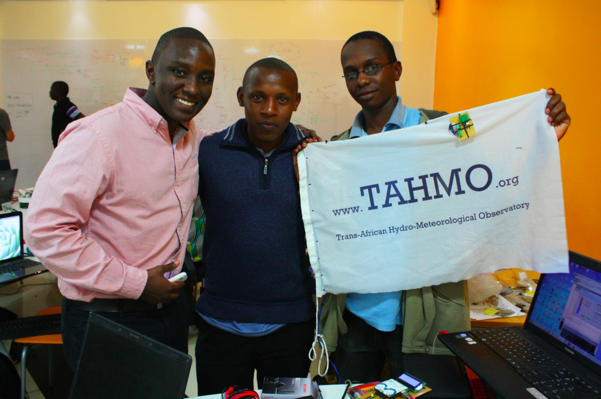

Three goals for my Kenya trip
POSTED 5 SEPTEMBER 2013
For the past four months I've been hard at work preparing for my departure for Kenya on September 23, now less than three weeks away! I've purchased my airfare and travel insurance, received my visa from the Kenyan Embassy in DC, submitted an application for a research permit to the Kenyan government, submitted paperwork for funding clearance from the Institute for International Education (who administer the Boren program), received immunizations and a malaria prophylaxis, and prepared my submission to OSU's Institutional Review Board (from which I must receive permission to conduct research on human subjects). Whew.
With all the busy work (mostly) behind me, I'm excited to get started with the real work of my Boren Fellowship. I have three goals to accomplish during my nine-month stay in Kenya:
1. Learn Swahili
One of the strings attached to a Boren Fellowship is that you must incorporate language study into your overseas program. The goal is to foster cooperation and understanding by bringing people into the US government who speak less commonly taught languages (the other string attached is that you must commit to working for the U.S. government for at least one year after you return). Swahili is the lingua franca of East Africa, meaning it is spoken between those who do not share a mother tongue. Thus, Swahili is very important in a country like Kenya, where there are 42 ethnicities (though English is common as well).
Over 140 million people in East Africa speak Swahili, so for a person such as myself who wants to work in East Africa later in life, learning Swahili makes sense. I've already been practicing with Rosetta Stone, and during my first three months in Kenya I will be taking language classes at the Nairobi Institute of Swahili and East African Culture. I also plan on practicing Swahili in everyday communication with Paul (who I wrote about previously).
2. Understand the impact of weather insurance
Previously I wrote about my interest in poverty, specifically in ending extreme poverty. Weather insurance is designed to alleviate poverty by protecting smallholder farmers from drought, which can be devastating in developing countries where agriculture dominates the economy. In Kenya, weather insurance has been offered in several areas since 2008. Farmers are insured against drought by measuring rainfall using the nearest weather station. If rainfall is measured below critical levels during the growing season, farmers receive a payout. Here is a brief video which explains one such program.
The question I am trying to answer is simple: what is the impact of weather insurance in Kenya? In other words, how effective is weather insurance in terms of accomplishing its goal of helping to alleviate poverty? I will be using the tools of econometrics to answer this question. In laymen's terms, I will interview two groups of farmers: those who have weather insurance and those who don't (but who are otherwise indistinguishable). The difference between these two groups is the impact of the insurance. This approach is very similar to a randomized control trial (RCT) which was explained beautifully in a recent podcast from This American Life. Once I return from Kenya I plan on writing my Master's thesis on the topic of weather insurance, using the data I collect while abroad.
3. Pilot TAHMO
The Trans-African Hydro-Meteorological Observatory (TAHMO) is an initiative led by two professors, including John Selker from OSU, a friend and former advisor. TAHMO's vision is a network of 20,000 micrometeorological stations throughout Africa, an incredibly ambitious project to which I was first exposed when John spoke at a TEDx event at OSU last year. The basic idea of the project is to meet the overwhelming need for reliable, accurate weather data in Africa, where many countries lack the infrastructure necessary for effective monitoring.
I'm currently working with John as a partner on the TAHMO project. We've already launched our first weather stations in Senegal and Kenya; now we are hoping to start scaling up. During my stay in Kenya I will be TAHMO's on-the-ground contact as we develop the partnerships and contacts needed to turn this vision into a reality.
Weaving the threads
One of the most exciting aspects of my fellowship is the overlap and synthesis of these three goals. Remember how weather insurance relies on nearby weather stations to determine payouts? Working with weather insurance providers will provide valuable insight into the challenges and opportunities that come with developing a weather station network in Africa. Meanwhile, learning Swahili can only assist with the process of interviewing rural farmers. In the end, despite the distinction I've made between these three goals, I see this fellowship as a single, cohesive journey (although I suspect there will be some unexpected turns and roadblocks along the way). Here's to taking one step at a time.